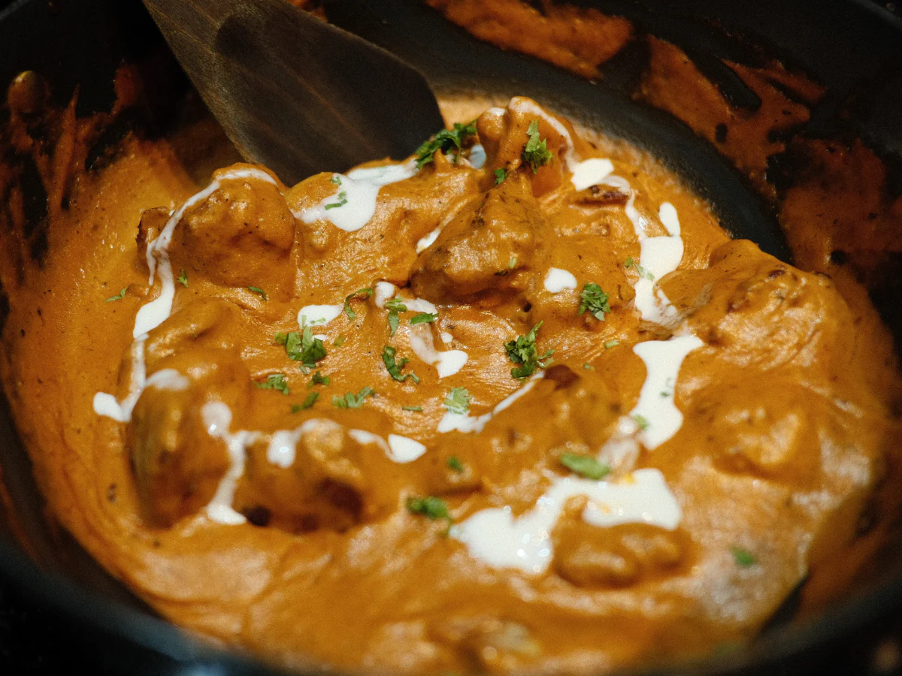

Chicken Tikka Masala Recipe
by chef Jaana

Chicken tikka masala is usually made with heavy cream, but I like to use coconut milk instead; its subtle sweetness works beautifully with the spices in the dish. Serve with steamed rice.
Ingredients:
- 1 ½ pounds skinless, boneless chicken thighs
- 1 tablespoon vegetable oil
- 2 teaspoons kosher salt
- 2 teaspoons garam masala
- 2 teaspoons ground cumin
- 1 teaspoon ground coriander
- 1 teaspoon smoked paprika
- 1 teaspoon ground turmeric
- ½ teaspoon ground black pepper
- ¼ teaspoon cayenne pepper
- ⅛ teaspoon ground cardamom
- 2 tablespoons clarified butter (ghee), or more as needed
Recipe Steps:
- Gather all ingredients. Place chicken in a bowl. Drizzle vegetable oil over chicken; toss to coat.
- Whisk together salt, garam masala, cumin, coriander, paprika, turmeric, black pepper, cayenne pepper, and cardamom in a small bowl.Sprinkle over chicken and turn to coat evenly.
- Melt clarified butter in a large, heavy skillet over high heat. Cook chicken thighs in hot butter until browned on all sides, 5 to 10minutes. Transfer chicken to a plate. When cool enough to handle, cut chicken into bite-sized pieces.
- Make sauce: Place the skillet with chicken drippings over medium-high heat. Stir onion into the skillet; sauté until onion softens and turns translucent, 5 to 6 minutes. Stir in tomato paste and cook until paste caramelizes, about 5 minutes. Stir garlic and ginger into tomato-onion mixture; cook until fragrant, about 1 minute.
- Pour crushed tomatoes into the skillet. Bring to a boil while scraping the browned bits of food off of the bottom of the skillet with a wooden spoon. Pour in coconut milk and chicken broth; bring to a simmer, reduce heat to medium-low, and cook, stirring occasionally, until flavors blend and sauce is slightly reduced, about 15 minutes.
- Stir chicken and any accumulated juices into sauce. Add cilantro and red pepper flakes; bring to a simmer, reduce heat to medium-low, and cook until chicken is cooked through and tender, 10 to 15 minutes. Season with salt and black pepper.
Go Back